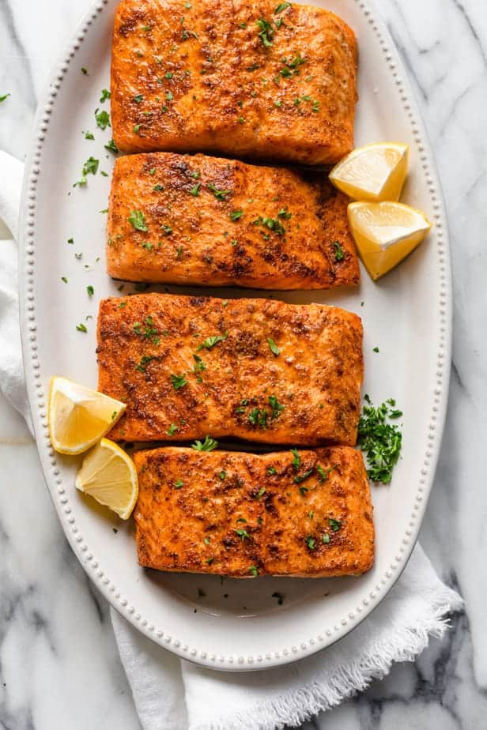

Air Fryer Salmon

Succulent!
Cooking salmon in an air fryer results in the most tender, succulent and delicious piece of fish, and it’s so quick and easy too!
Ingredients
- Garlic
- Paprika
- Salt and Pepper
- Olive Oil
- Salmon Fillets
Steps
- Preheat air fryer to 400 degrees.
- Season each fillet with garlic, paprika, salt and pepper and drizzle a little olive oil on top.
- Depending on the thickness of the salmon and the exact air fryer you have, the time could range. But on average, expect the air fryer salmon to be cooked within 7-9 minutes